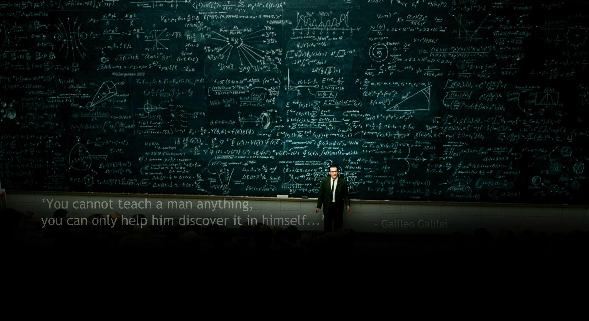

Desde cedo, aprendi que a vida não é feita apenas de facilidades, mas de desafios que nos moldam e nos fortalecem. Cresci em um bairro simples, onde os recursos eram limitados, mas os sonhos sempre foram grandes. Mesmo quando as circunstâncias pareciam difíceis, eu sabia que tinha uma escolha: desistir ou persistir. E eu escolhi persistir. Na escola, eu não era o aluno mais brilhante da turma, mas era o mais determinado. Enquanto alguns desistiam diante das primeiras dificuldades, eu encarava cada problema como uma oportunidade de aprender. Quando não entendia uma matéria, passava horas estudando até que tudo fizesse sentido. Meu lema sempre foi: "Se não consigo hoje, vou conseguir amanhã." Aos 15 anos, descobri minha paixão pela eletrônica e informática. Não tinha acesso a equipamentos caros ou cursos especializados, mas isso não me impediu. Com um computador antigo e alguns livros emprestados, comecei a aprender sozinho. Noites viraram madrugadas enquanto eu desmontava e remontava aparelhos, testava circuitos e programava códigos. Cada erro era uma lição, cada falha, um degrau a mais na minha jornada. Quando consegui meu primeiro emprego como técnico em informática, pensei que finalmente as coisas ficariam mais fáceis. Mas logo percebi que os desafios só aumentavam. Havia dias em que os problemas pareciam insolúveis, clientes insatisfeitos e prazos impossíveis. Mas eu nunca desistia. Lembrava-me de todas as vezes que havia superado obstáculos antes e sabia que, com persistência, poderia superar qualquer coisa. Anos se passaram, e continuei a evoluir. Tornei-me um especialista em eletrônica embarcada, dominei tecnologias avançadas e assumi projetos complexos que muitos consideravam impossíveis. Minha jornada não foi fácil, mas cada desafio me tornou mais forte, mais sábio e mais determinado. Hoje, olho para trás e vejo uma trajetória marcada por esforço, resiliência e uma vontade implacável de vencer. Sei que o sucesso não é um destino, mas uma jornada contínua. E, por isso, continuo a buscar novos desafios, sempre com a certeza de que, com persistência e dedicação, nenhum obstáculo é grande demais para ser superado. Além disso, tenho o desejo ardente de estudar em vários países, de expandir meus horizontes acadêmicos e profissionais, de me aprofundar em diversas áreas do conhecimento. Minha meta é realizar várias graduações, mestrados, doutorados e pós-doutorados, não só para crescer pessoalmente, mas para honrar o meu nome e o legado da minha família. Sei que, ao fazer isso, estarei não apenas cumprindo um sonho pessoal, mas também retribuindo a confiança e os valores que me foram passados ao longo da vida.
“Se não consigo hoje, vou conseguir amanhã.” - Este sempre foi meu lema.
Manutenção e reparo de equipamentos eletrônicos, instalação e configuração de sistemas de segurança, desenvolvimento de projetos de eletrônica embarcada.
Suporte técnico a usuários de computadores e dispositivos móveis, instalação de sistemas operacionais, manutenção de equipamentos de informática.
Técnico em Eletrônica - IFPA (Cursando)
Técnico em Informática - SECTET (Cursando)
Para mais informações ou para entrar em contato comigo, visite meu LinkedIn.